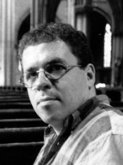

Ruud Huijbregts studeerde aan het Brabants Conservatorium te Tilburg orgel bij Hub Houët en Bram Beekman, clavecimbel bij Gerard Dekker en koordirectie bij Jan Boogaarts en Cees Rotteveel. Verder volgde hij nog diverse cursussen o.a. bij Luigi Tagliavini, Albert de Klerk en Kamiel d'Hooghe (orgel) en Joop van Zon (orkestdirectie).
Ruud Huijbregts is op verschillende terreinen actief: als organist, clavecinist/continuospeler en als koordirigent gaf hij reeds vele concerten in binnen- en buitenland en was hij te horen op diverse radio- en televisie- en CD-opnamen. Onlangs nog verscheen een CD met het complete werk van Herman Hollanders (in de vroege 17e eeuw o.a. organist van de Eindhovense Sint Cathrien).
Hij speelde orgelconcerten o.a. in St.Paul's Cathedral in Londen, de Utrechtse Domkerk en de Kathedrale Basiliek St. Bavo te Haarlem. Samen met het Brabants Orkest in het Concertgebouw te Amsterdam en op het concertorgel in het Muziekcentrum 'Frits Philips' te Eindhoven.
Verder was hij medeoprichter van het Eindhovens Vocaal Ensemble, met welk koor hij sinds 1981 vele grote koorwerken uitvoerde oa. Johannes en Matthäus Passie, Magnificat en Hohe Messe van Bach, het Requiem van Mozart en de Mariavespers van Monteverdi en daarnaast ook vele werken van o.a. Toebosch, Manneke, Kodaly, Britten en Pärt.
Ook was hij mede-initiatiefnemer van Stichting Vrienden van het Orgel, Stichting Muziek in de Cathrien (in 1997 samengegaan in de Stichting Kerkconcerten Eindhoven), die de wekelijkse, drukbezochte kerkmuziekuitvoeringen op zaterdagmiddag organiseert in de St.Cathrien te Eindhoven, en het Barokorkest "Brabantsch Muzyk Collegie".
Op dit moment is Ruud Huijbregts werkzaam als organist / dirigent van de Eindhovense Stadskerk St.Cathrien, als dirigent van het Eindhovens Vocaal Ensemble en het koor Vokollage van het ESMG “Quadrivium” en als docent aan de CKE muziekschool te Eindhoven.